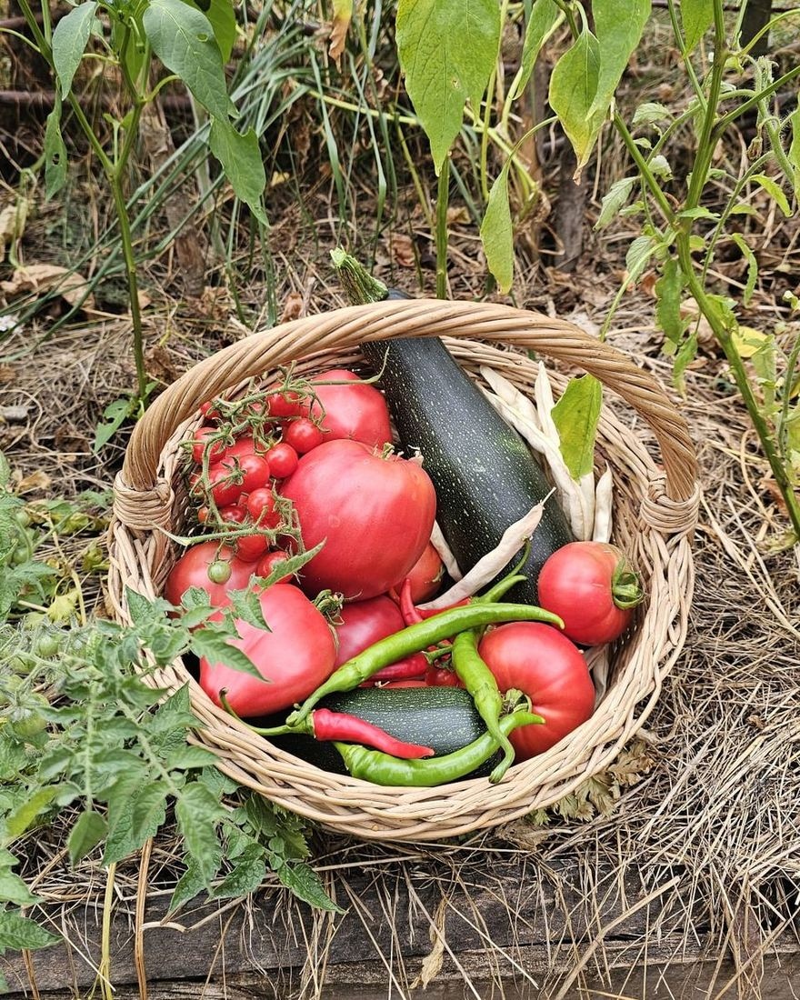

Și anul acesta am vrut să vedem dacă pământul dă roade fără să fie lucrat, fără unelte, fără intervenții, doar acoperit cu paie de la plantat până la cules.
🌱 Semănat
Am extins puțin față de primul an. Solul, hrănit ani la rând din fân depozitat, era gata pentru mai mult. Am pus:
- 🥔 Cartofi
- 🧅 Ceapă
- 🍅 Roșii
- 🌿 Țelină
- 🥒 Dovlecei
- Mazăre
🌿 Crescut
Am vrut să intervenim cât mai puțin. Am privit mai mult decât am făcut și tot ce părea buruiană avea, de fapt, un rost: pătlagina ne spunea că solul e bătătorit pe alocuri, urzica ne spunea unde e azot din belșug.
Cea mai mare lecție a fost simplă: solul contează mai mult decât planta.


🍂 Recoltă
Din august am început să culegem dovlecei, iar până în toamnă grădina ne-a mai dăruit ardei iuți, câteva găleți de cartofi și roșii crescute printre gălbenele. Nici fasolea nu s-a lăsat mai prejos. Fără sapă, fără îngrășăminte — doar timp, apă și căldură.



N-am avut recolte uriașe, dar am avut cât să ne potolim pofta de legume cu gust adevărat. Ajungem în grădină o dată la două-trei săptămâni și, de fiecare dată, ne așteaptă cu câte ceva, fără să fi muncit prea mult pentru asta.
Cel mai frumos lucru n-a fost recolta, ci copiii care treceau singuri pe la grădina lor, să vadă ce-a mai crescut, ce mai este copt.